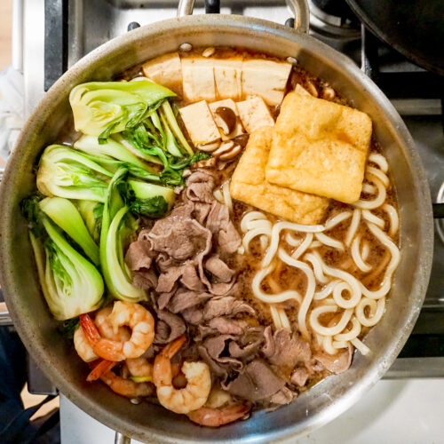

Sukiyaki

Sukiyaki
a Japanese hot pot dish cooked and served at the table with thinly sliced beef cooked in sweet and salty based broth
Pot Ingredients
- 2 servings of udon noodles
- 1/2 head of napa cabbage
- 1/2 bunch of shugiku
- 1 Tokyo negi
- 1 package of enoki mushroom
- 8 shitake mushrooms
- 1 package of broiled tofu
- 1/3 of a carrot
- 1 package of shirataki noodles
- 1 pound of thinly sliced beef
- 1 tablespoon of vegetable oil
- 1 tablespoon of brown sugar
- 1 cup of dashi/water
Sukiyaki Sauce Ingredients
- 1 cup of sake
- 1 cup of mirin
- 1/4 cup of sugar
- 1 cup of soy sauce
Steps
- Gather all Ingredients
- Make sukiyaki sauce
- combine sake, mirin, sugar, and soy sauce in saucepan and bring to a boil then set aside
- Prepare ingredients
- Cook udon noodles
- Cut nappa cabbage
- Cut shungiku
- Cut and disgard shitake mushroom stems and make decorative cuts
- Cube tofu
- Cook sukiyaki
- Place cast-iron pot on table and turn on to medium heat
- When heated, add 1 tablespoon of cooking oil
- Place slices of meat into pot to sear and sprinkle a tablespoon of brown shugar on top making sure to cook both sides
- Pour half of prepared sukiyaki sauce and 1 cup of dashi/water into pot
- Add vegetables, tofu, and other ingredients, lid the pot, and bring to gentle boil
- Bring down to simmer until ingredients are fully cooked
- Serve contents of pot and add noodles to the last round fof last meal